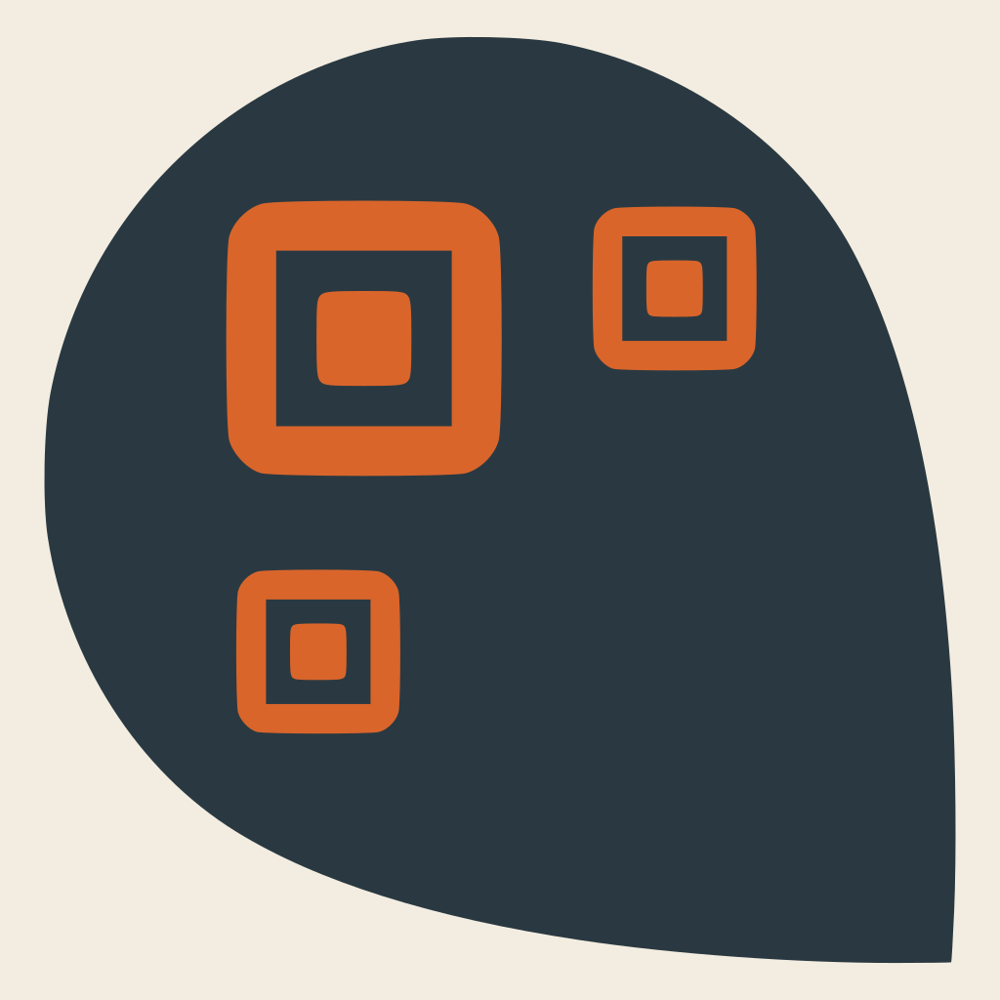

TagDrop encodes self-contained digital content — HTML pages, images, audio clips, plain text — into one or more 2D barcodes (QR, Aztec, Data Matrix) for physical placement: on walls, along trails, inside objects. A finder scans the code(s) with the TagDrop Android app, or any browser using the tools below, to retrieve the content — no internet connection required once the codes are scanned.
Try the format right in your browser — no install required.
Create TagDrop QR codes from text, HTML, images, or audio — single files or full "paper" layouts. Supports key-code QR and passphrase encryption. Print-ready output.
Scan TagDrop QR codes with your device camera, assemble multi-code payloads, browse paper directories, and follow tagdrop:// links between pages. Unlocks encrypted content via key-code or passphrase. Works fully offline after the first visit — handy on phones without a native TagDrop app, like iPhone.
A gallery of pre-generated sample codes: standalone payloads, multi-sector content, a paper set, a mini e-book of Markdown pages, a multi-location trail, and encrypted examples (key-code and passphrase).
tagdrop:<base41-cbor-sequence> URI — a CBOR sequence
(version, type, payload map), Base41-encoded so it fits QR alphanumeric
mode with minimal overhead. Content can optionally be DEFLATE-compressed,
and IDs are content-addressed (SHA-256-based), so identical content
always gets the same ID regardless of who created it.tagdrop://<root-hash>/<slug>
links, so a small static site survives being printed and scanned back in.related hints, tag a loose set of stickers
with a shared collection so they group into one card and map, or mark
a code as a reply to another to thread a conversation across drops.Full details in the format specification (v1).
The TagDrop Android app scans codes with the camera, caches found
content, and renders HTML/image/audio content offline — including
navigation between pages of the same paper via tagdrop://
links. Encrypted content can be unlocked with a key-code QR or a
passphrase; retained keys are managed in a dedicated Key Management
screen.
#hashtag filtering.Build from source using DEVELOPING.md.